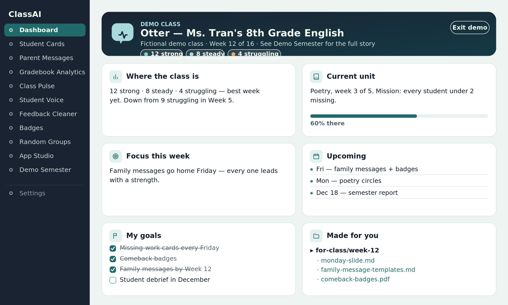
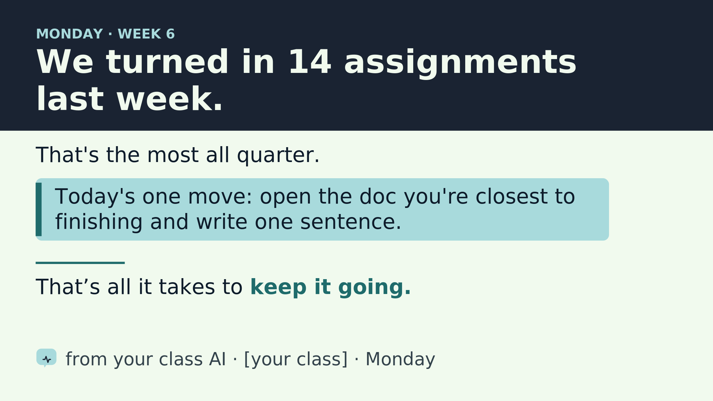

It drafts your Monday slides, your parent messages, your encouragement cards. It reads how the class is doing through name-free summaries and adjusts what it makes next. And your gradebook never leaves your laptop — the AI works for your class without ever seeing your students' data.


See it in 90 seconds
No setup, no real data, no account:
- Double-click
local-tools/ClassAI-dashboard.html. - Click Progress Cards in the sidebar, then “Load the fictional demo class.” Print a card.
- Click AI Export, load the demo class again, and generate a summary — that's the name-free aggregate the AI runs on.
That's the whole privacy architecture in your hands: real-feeling tools on your side of the line, an aggregate-only summary crossing it.
Want the long view? Demo Semester (in the same sidebar) shows a fictional class running this project for 16 weeks — including the Cowork chats, the slump, the turnaround, and the final report.
Got 10 more minutes? Open this folder in Claude Cowork and say hi. Your AI will interview you, draft its persona, and make your first classroom slide before the chat ends.
The experiment
The question behind the project: can a semi-autonomous classroom AI help a class make progress towards a goal? Not “can AI do classroom tasks” — can an AI, given some real autonomy, move the needle on something a teacher actually cares about.
To make the question answerable, the AI runs under four constraints:
- A personality. Your students help name and shape the AI's voice. It's your class's AI, with a stake in your class's success.
- A clear goal. The AI is given one mission for the unit, quarter, or semester. Everything it does ladders up to that goal, and “progress towards the goal” is what success looks like.
- Evidence-based teaching practices. The AI's defaults come from research, not vibes. When it makes a choice — what to put on a slide, how to phrase an encouragement note — it can tell you which practice it's drawing on.
- Aggregated data only. The AI never sees individual student records. Only summaries, tier counts, and aggregate movement. PII stays in offline tools that run on the teacher's laptop.
The AI proposes, the teacher decides, the class moves (or doesn't), the aggregates come back, the AI adjusts. That's the loop. And the AI keeps a logbook so that by June, the experiment reads as a story — what you tried, what moved, what you'd change.
The shape of this project is borrowed from Anthropic's Project Vend — the experiment where Claude was given a small business to run, with real goals, real constraints, and real autonomy. The question here is the classroom version: what if something like that existed in a classroom? This is a scaled-back test of that idea.
How it works
The brain: Claude Cowork
The AI lives in Claude Cowork. Every conversation reads from a small set of instruction files in this folder — the AI's personality, its goal, the teaching practices it draws on, and the boundaries the teacher has set. The teacher updates those files through normal chat; the AI grows with the class across every session.
How it personalizes
The teacher and the class build the AI's personality and style together during setup. From there, it adapts to what the class wants and needs: an “ASL sign of the week” drawn from your uploaded lessons, an end-of-unit celebration where it tells you what to pick up and prints the slides and posters for you.
What the AI makes
Slides, posters, parent messages, encouragement notes, lesson openers. When the right tool doesn't exist, the AI builds one — a single offline HTML file the teacher double-clicks to open. None of these tools call the internet or store student data; the AI generates the code, the browser does the data work.
How the AI hears from the class
Students send anonymous messages through something like a Google Form. The teacher removes any identifying info like names or emails, pastes the aggregate into Cowork, and the AI uses the messages to adjust what it proposes next.
How the AI measures itself
The teacher drops their gradebook into an offline tool that produces a paste-ready aggregate — tier counts, most-missed assignments, week-over-week movement, zero names. The AI reads the aggregate and checks whether its actions are moving the class toward the goal.
Where the AI doesn't get to decide
The teacher sets boundaries during onboarding and adjusts them as the experiment runs: what the AI can ship without review, what always needs a human read first, and what's off-limits entirely.
The offline apps
The project includes a set of small browser-based apps the teacher uses to do anything that touches student data. They run entirely offline — no network calls, no cloud, no AI in the loop. Your roster and gradebook never leave your laptop. They're safe to use with real student data.
You open them through Class Tools (local-tools/ClassAI-dashboard.html) — double-click it once, and a sidebar lets you jump between apps.


Included today:
- Dashboard. Your home base. Shows your class goals, where the class is right now, and what your AI is focused on. Every other app is one click from here.
- Progress Cards. Print one card per student — either what they owe right now (missing work, with checkboxes) or how they're doing overall (every assignment, color-coded). Two-per-page; cut them and hand them out at the door.
- Parent Messages. Write one short template per tier (struggling / steady / strong) and the app mail-merges it into per-student messages with each kid's name, period, grade, and missing assignments. You paste each one into ParentSquare, email, or whatever you use to reach families.
- Gradebook Analytics. Drop in your gradebook and get a sortable per-student view — tiers, missing assignments, and patterns you wouldn't spot scrolling rows in PowerSchool.
- AI Export. A name-free summary of how the whole class is doing — counts by tier, most-missed assignments, week-over-week movement. This is what you paste to your AI so it knows the state of the class without ever seeing student records.
- Feedback Cleaner. Paste anonymous student feedback; it strips names and emails on your laptop and hands you a name-free digest to paste into your AI. Comes with a ready-to-use Google Form. Safe to use with real responses.
- Badges. Make up your own badges (Most Improved, Best Question of the Week, whatever fits your class), pick students from the roster, and print bordered certificates two-per-page.
- Random Groups. Generate balanced groups of any size, with a do-not-pair list and pair history so the same combinations don't keep coming up.
- App Studio. A gallery of tools your AI can build for you — each with a ready-to-paste prompt. The starting set is just the start.
- Demo Semester. A fictional class running everything above for 16 weeks — Cowork chats included. Start here to see the destination.
These tools are a starting set — your AI builds the next one. When you need something the included apps don't cover, the teacher-app-builder skill (installable in Claude Cowork) lets the AI generate a new offline app for you. It asks a few questions, builds the HTML, runs a privacy check, and registers the new app with the Dashboard sidebar automatically.
Going deeper without your students
After the 90-second tour, two more on-ramps before real kids are involved:
A full dry run of the apps (~15 minutes)
From the Dashboard, walk through Progress Cards → AI Export → Parent Messages → Badges with the demo class. See what each one produces side by side.
The full experiment, end to end (~30 minutes)
Open this folder in Claude Cowork and say hi. Run AI Export on the demo class, paste the aggregate into Cowork, and ask the AI for “Monday's opening slide.” That's the loop from “The experiment” running on a fictional class.